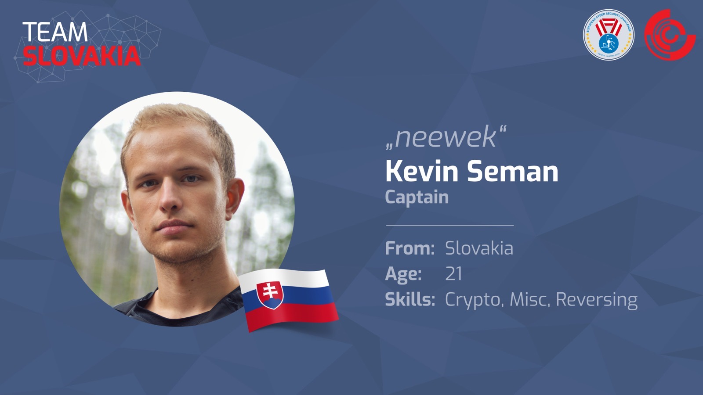
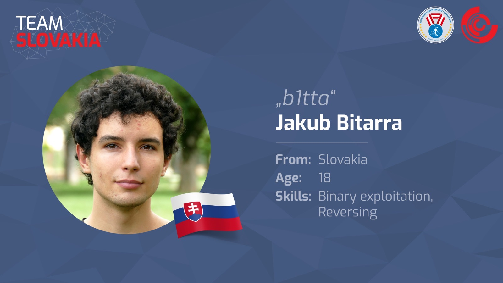
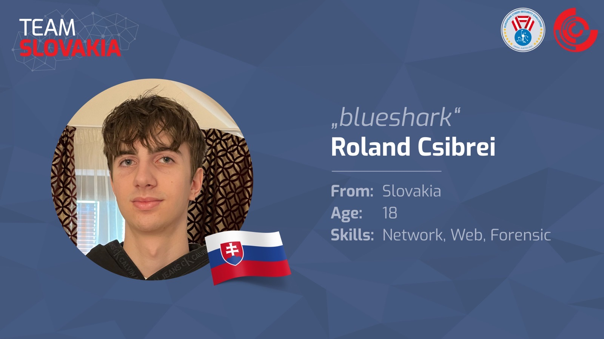
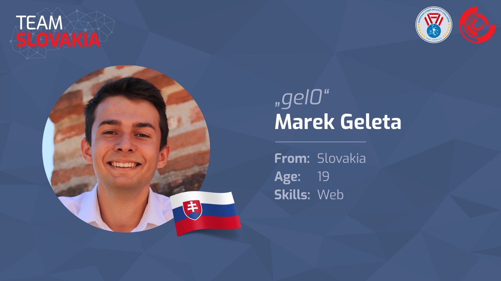
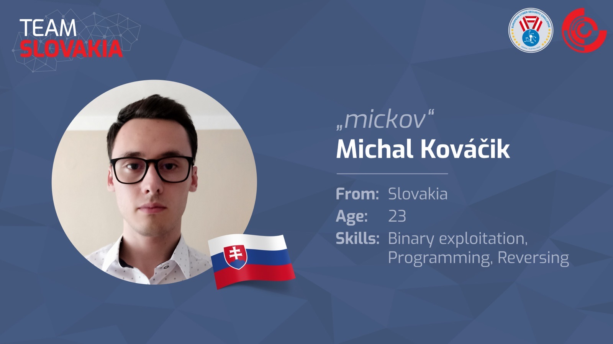
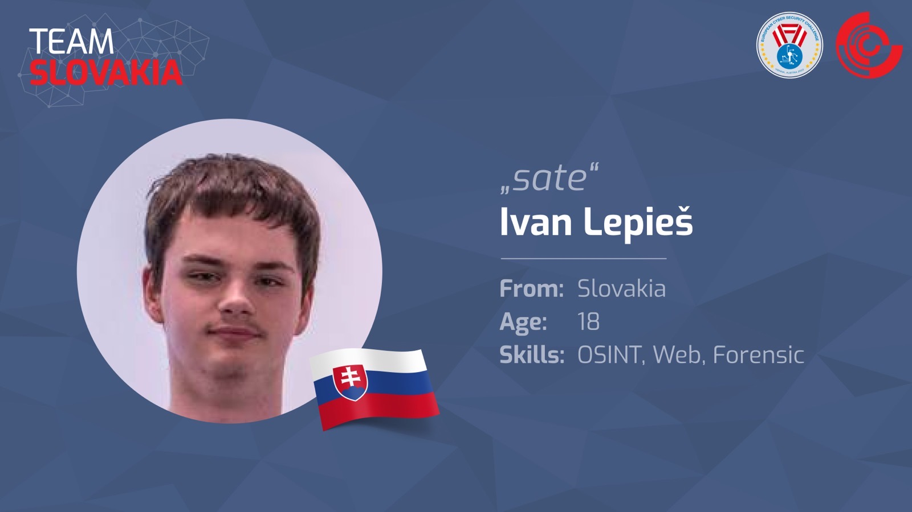
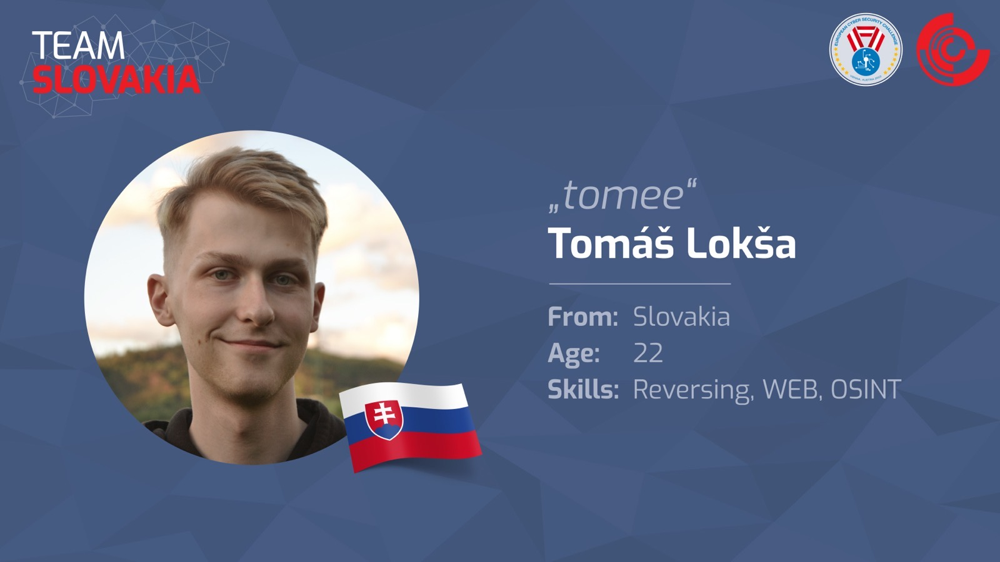
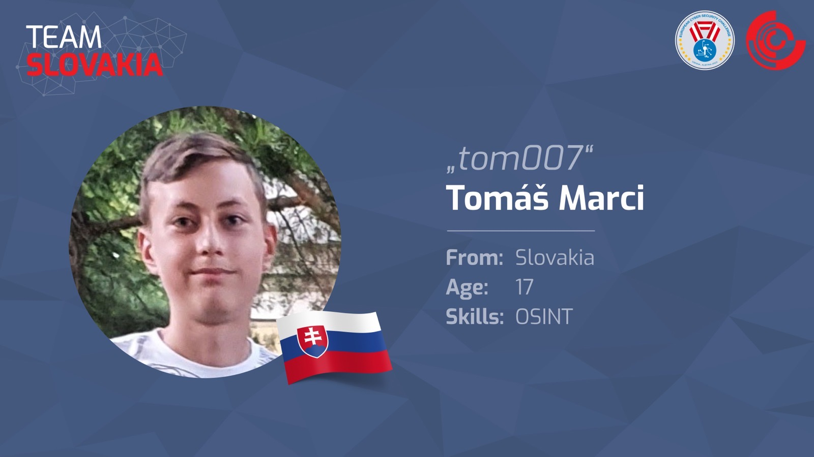
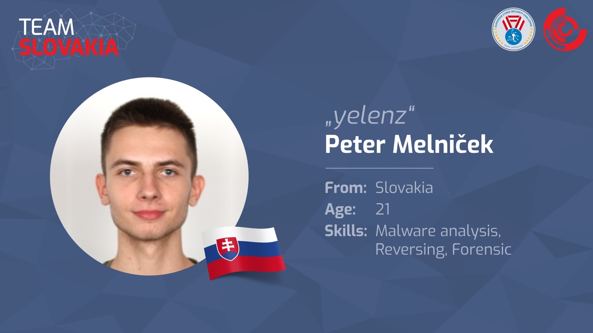
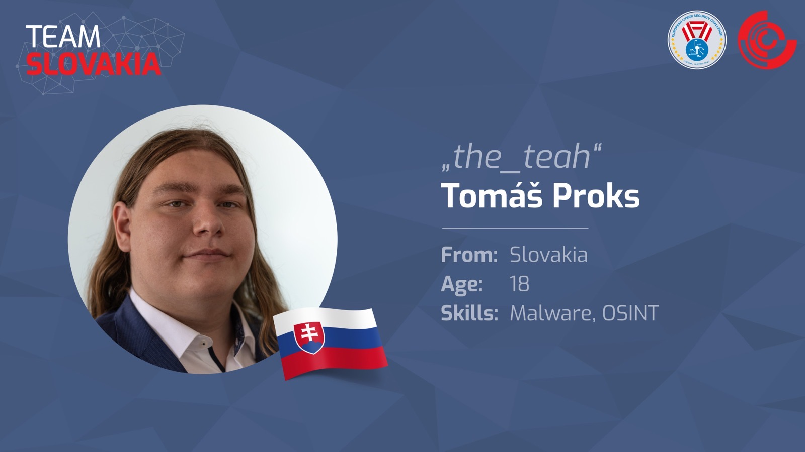

Kevin Seman
Kapitán
Somotor · 21
European Cybersecurity Challenge
Viedeň, Rakúsko · 13. – 16. septembra 2022 · historicky prvá účasť slovenského národného tímu · 22. miesto z 28 krajín.
// o ročníku
Na septembrovej európskej kybersúťaži vo Viedni reprezentoval Slovenskú republiku po prvý raz tím študentov stredných a vysokých škôl. Členovia tímu boli vybraní spomedzi účastníkov troch národných súťaží: Guardians, Kybersúťaž a CyberGame.
Tím pozostával zo študentov s rôznymi zručnosťami, ktorých kyberbezpečnosť baví a neustále sa v nej zlepšujú. Kapitánom bol Kevin Seman, 21-ročný študent kyberbezpečnosti na Masarykovej univerzite v Brne. Najmladším členom bol 17-ročný stredoškolák Tomáš Marci zo Spišskej Novej Vsi.
Vo Viedni súťažili s národnými tímami členských štátov EÚ v oblastiach ako webová a mobilná bezpečnosť, krypto hádanky či reverzné inžinierstvo. Úlohy boli založené na reálnych príkladoch z kybernetickej bezpečnosti.
Nomináciu tímu vykonalo Kompetenčné a certifikačné centrum kybernetickej bezpečnosti na základe výsledkov národných súťaží — Guardians (2021), CyberGame a Kybersúťaž (2022).
// zostava 2022

Kapitán
Somotor · 21

Súťažiaci
Senec · 18

Súťažiaci
Dunajská Streda · 18

Súťažiaci
Galanta · 19

Súťažiaci
Liptovský Mikuláš · 23

Súťažiaci
Vlkanová · 18

Súťažiaci
Kysucké Nové Mesto · 22

Súťažiaci
Spišská Nová Ves · 17

Súťažiaci
Vranov nad Topľou · 21

Súťažiaci
Malá Ida · 18
// galéria